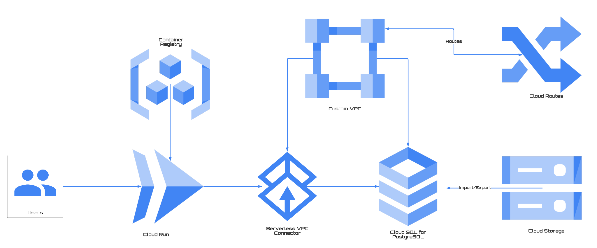

Serverless on Google Cloud
What's this
Welcome to Serverless wonderland on Google Cloud, the goal of this repo is to offer a collection of best practices and tutorrials to better leverage Serverless offering from Google Cloud. Currently the content has been categorized for the following subjects:
- General
- Networking
- Storage
- Day 2 Operation
- CI/CD
- Tooling
Will include advanced topics in the future:
- Solutions
- Workaround for something
Contributing
Encourage you to contribute to this repo if you have implemented a practice that has proven to solve something, just open an issue or a pull request to share with us, please.
Notes
Starring the repo if you feel helpful, that's the big motivation and thanks.